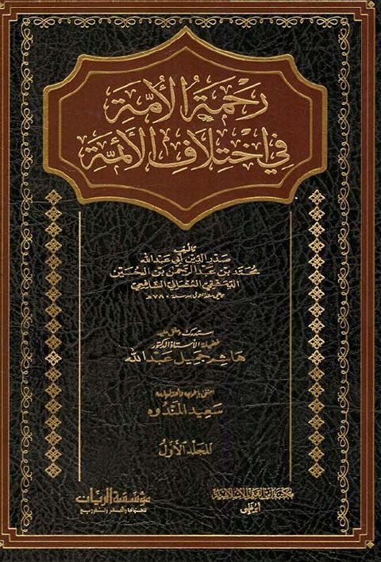

Downloads need an internet connection.
رحمة الأمة في اختلاف الأئمة
Authors: صدر الدين محمد بن عبد الرحمن الحسين الدمشقي
Editors: هاشم جميل عبد الله
Publishers: مؤسسة الريان
▫️ العنوان: رحمة الأمة في اختلاف الأئمة ▪️ المؤلف: #صدر_الدين_محمد_بن_عبد_الرحمن_الحسين_الدمشقي ▫️ المحقق: #هاشم_جميل_عبد_الله ▪️ الناشر: #مؤسسة_الريان ▫️ تاريخ النشر: 1442هـ 2021م ▪️ بلد النشر: بيروت، #لبنان ▫️ الطبعة: 1 ▪️ عدد الأجزاء: 2 ▫️ الصفحات: 1122 ▪️ نوع الوعاء: #كتاب ▫️ التصنيف الرئيسي: #الفقه_وأصوله ۪